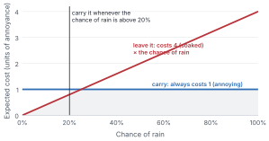
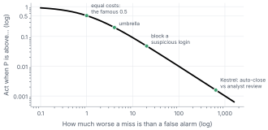
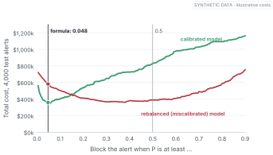
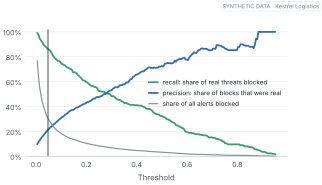
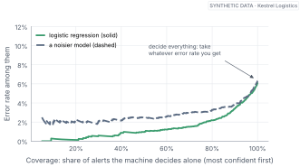
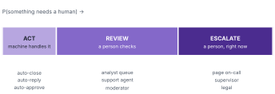

Not everything that can be counted counts, and not everything that counts can be counted.
— William Bruce Cameron, Informal Sociology, 1963
You made it. You have a model whose probabilities you’ve checked and, where needed, fixed. When it says 20%, about one in five of those alerts really is an attack.
And now you hit the wall everyone hits:
“Great. So where do I put the line?”
Most people pick 0.5 without thinking about it. It’s the default in almost every library. It feels neutral.
It isn’t neutral at all. It’s a very specific opinion about your business, and it’s usually the wrong one. This chapter shows you how to put the line where it belongs, with nothing fancier than the arithmetic you already have.
By the end of this chapter
Turn two costs into one threshold, and explain why 0.5 is a special case.
Check the formula against a brute-force search on real (synthetic) data.
See why the formula only works when the probabilities are calibrated.
Read the precision–recall trade-off as a business choice.
Treat “I don’t know, ask a person” as a real action, and meet the three doors: act, review, escalate.
4.1 The umbrella question
Let’s start somewhere dry. Well, somewhere that might not be.
The forecast says there’s a 30% chance of rain. Do you take an umbrella?
It depends on two things you already know without thinking about them. Carrying an umbrella you didn’t need is mildly annoying; call it 1 unit of annoyance. Getting soaked on the way to a meeting is much worse; call it 4.
If you carry it, you pay 1, rain or shine. If you leave it, you pay 4, but only if it rains, so on average you pay 4 × the chance of rain.

Figure 4.1: The umbrella decision. Carrying always costs 1. Leaving it costs 4 times the chance of rain. The lines cross at 20%: above that, carry it.
The two lines in Figure fig-umbrella cross where 4 × P = 1, which is P = 0.2. Above a 20% chance of rain, carry the umbrella. Below it, leave it at home. At 30%, you take it, even though it probably won’t rain.
That’s the whole chapter, really. The rest is the same idea wearing work clothes.
4.2 One formula, two costs
Replace the umbrella with any yes-or-no action. There are two ways to get it wrong:
a false alarm: you act, and you didn’t need to (carried the umbrella; blocked a harmless login);
a miss: you don’t act, and you should have (got soaked; let an attacker in).
If a false alarm costs Cfa and a miss costs Cmiss, the cheapest thing to do, on average, is to act whenever
P > Cfa ÷ (Cfa + Cmiss)
Check it with the umbrella: 1 ÷ (1 + 4) = 0.2. Exactly where the lines crossed.
Now look at what happens when the two costs are equal. The formula gives 1 ÷ 2 = 0.5. That’s where 0.5 comes from. It’s the right threshold only when a false alarm and a miss hurt exactly the same amount, which is almost never true for anything worth building a model for.

Figure 4.2: The right threshold for any ratio between the cost of a miss and the cost of a false alarm (both axes on a log scale). Equal costs give 0.5. As misses get more expensive, the line drops fast.
Figure fig-threshold-ratio puts a few real decisions on one curve. Kestrel’s decision in Chapter 14, whether an alert may close itself without any human looking at it, sits in the far bottom-right corner: a miss there is about 630 times worse than an analyst’s twelve minutes, so the line drops to about 0.0016. Different decision, different costs, different line.
Going deeper
Where the formula comes from. For a single case with probability P, acting costs (1 − P) × Cfa on average (you pay only if it was harmless), and not acting costs P × Cmiss (you pay only if it was real). Act when the first is smaller: (1 − P) Cfa < PCmiss, which rearranges to P > Cfa / (Cfa + Cmiss). If getting it right also has costs or benefits (say, blocking a real threat earns some credit), the same logic works with a 2×2 table of costs, one for each combination of action and truth. This is the foundation of cost-sensitive learning (Elkan 2001).
4.3 Does it work on real alerts?
A formula is nice. Evidence is better. Let’s test it.
Here’s a decision Kestrel makes on every alert: block it or allow it? Block the sender, the connection or the sign-in, automatically. Wrongly blocking something harmless costs about $200 in disrupted work: a stuck shipment, an angry customer, an engineer locked out. Letting a real threat through at this step costs about $4,000, since other defences still have a chance to catch it later. Those are illustrative numbers, but plausible ones.
The formula says block when P > 200 ÷ 4,200, which is about 0.048.
Try it
Compare the formula with a brute-force search over 300 thresholds, using the calibrated logistic regression from Chapter 2 on the test alerts.
alerts = soc.load()train, calib, test = soc.split(alerts)F =lambda d: soc.feature_matrix(d).to_numpy()model = LogisticRegression(C=1e4, max_iter=5000).fit( F(train), train.malicious)p, y = model.predict_proba(F(test))[:, 1], test.malicious.to_numpy()false_alarm, miss =200, 4_000t = false_alarm / (false_alarm + miss)def total_cost(p, t): block = p >= treturn ((block & (y ==0)).sum() * false_alarm+ (~block & (y ==1)).sum() * miss)grid = np.linspace(0.005, 0.9, 300)best = grid[np.argmin([total_cost(p, g) for g in grid])]print(f"brute force {best:.3f}: ${total_cost(p, best):,}")print(f"formula {t:.3f}: ${total_cost(p, t):,}")print(f"0.5 : ${total_cost(p, 0.5):,}")
brute force 0.059: $350,400
formula 0.048: $358,800
0.5 : $831,400
The formula lands close to the brute-force best, and the cost difference is small. The 0.5 line costs 2.3 times as much.

Figure 4.3: Total cost on the test alerts at every threshold. For the calibrated model (green), the formula’s line sits near the bottom of the valley. For the same model trained on rebalanced data (red), the same line lands halfway up the wall.
And now the reason Chapter 3 came first. Figure fig-cost-curve also shows the rebalanced model from Chapter 3, which ranks alerts almost as well but whose probabilities are inflated. Put the formula’s line on its numbers and the cost is 62% higher. Its own cheapest line is way out at about 0.38, and there’s no formula that could have told you so. You’d have to find it by trial and error, and redo the search every time the costs change.
With honest probabilities, costs set the line directly. Without them, you’re guessing.
That’s the practical payoff of calibration, in one sentence. It turns threshold-setting from an endless tuning exercise into a line of arithmetic you can explain to your finance team.
4.4 Precision, recall, and the price of each
In Chapter 2, precision and recall looked like two scores. Now you can see them for what they are: two ends of the same rope.

Figure 4.4: As the threshold moves up, precision (how many blocks were real) rises and recall (how many threats got blocked) falls. The grey line shows how much traffic you’re blocking. The vertical line is the cost-based threshold.
At the cost-based line in Figure fig-pr-threshold, Kestrel blocks about 30% of alerts. That catches 86% of real threats, but only 21% of the blocks are real ones. That precision sounds poor. Is it?
Only the costs can say. Each wrong block costs $200; each missed threat $4,000. The line sits at 200 ÷ 4,200, about 0.048: block an alert when the chance it’s real is better than about 1 in 21. That’s a rule about the marginal alert, the one sitting right on the line, where blocking and letting it through cost the same on average.
Precision is a different thing. It’s an average over every alert above the line, and most of those are far likelier than 1 in 21 to be real, which is why it comes out nearer one in five. Nobody chose that number. It’s a by-product of putting the line where the costs say, and a model with better ranking would push it up without moving the line at all. Arguing about precision or recall on its own, without the costs, is arguing about half a sentence.
Set the threshold
Kestrel’s sales team complains that blocked customer emails are costing deals, and argues a wrong block costs $800, not $200. Recompute the blocking line. Roughly what happens to the share of alerts blocked, and to recall?
(800 ÷ 4,800 ≈ 0.17. The line moves up, fewer alerts get blocked and more threats get through. The model didn’t change. The business’s priorities did, and the threshold should follow them.)
4.5 “I don’t know” is an action too
So far every decision has been yes or no. But there’s almost always a third option, and it’s the most useful one: don’t decide; ask a person.
The idea is old. In 1970 the engineer C. K. Chow showed that a recogniser allowed to reject its least certain cases could cut its error rate dramatically, and worked out the best trade-off (Chow 1970). Today it’s called selective prediction, or classification with a reject option (Geifman and El-Yaniv 2017).
Here’s how it looks at Kestrel. Sort the alerts by how confident the model is, surest first. Let the machine decide only the top slice, and send the rest to people. How low does the error rate go?

Figure 4.5: Coverage against risk. Reading from right to left: if the machine decides every alert, you take its full error rate. Let it decide only the alerts it’s surest about and send the rest to people, and the error rate among its decisions falls steeply. A better model (green) gives you more coverage at the same risk.
Deciding every alert, the model gets 6.1% wrong. Deciding only the surest 80%, just 2.2% of its decisions are wrong. Deciding the surest half, 0.9%.
That curve, from Figure fig-coverage-risk, is one of the most useful pictures you can show a manager. It turns “how good is the model?” into “how much of this work can we safely hand over, at what error rate?”, which is the question they actually have.
4.6 Three doors
Put the two ideas together, cost-based lines and “ask a person”, and a shape appears that we’ll use for the rest of the book.

Figure 4.6: The three doors. At one end the model is confident nothing’s needed, so the machine handles it. At the other end it’s confident something’s badly wrong, so a person is pulled in immediately. In between, where it’s unsure, a person looks when they can.
Act when the model is confident the machine can handle it alone. Review when it’s unsure, so a person checks in the normal flow of work. Escalate when it’s confident something important is wrong, so a person is pulled in right now.
The two boundaries between the doors come from the same kind of cost arithmetic you’ve just done, with one extra line for each extra action. Chapter 14 does exactly that for Kestrel’s SOC, and then does the part this chapter skips: what happens when you don’t have enough people to staff the middle door.
Where this breaks
Costs are guesses, and guesses carry the same weight in the formula as facts. Two habits help. First, try your costs at half and double their value and see how much the line moves; if the answer barely changes, stop arguing about the exact number. Second, remember that costs often differ from case to case: a false alarm on the CEO’s laptop isn’t a false alarm on a test server. Per-case costs mean per-case thresholds, which is fine, as long as you write them down. And some costs aren’t money at all: trust, fairness, safety and the law. Put those on the table explicitly, or someone else’s defaults will decide them for you.
Plans are worthless, but planning is everything.
— Dwight D. Eisenhower, as quoted by Richard Nixon in Six Crises, 1962
The same goes for cost estimates. The numbers will be wrong. Writing them down, arguing about them and seeing what they imply is where the value is.
4.7 The end of Part I
Step back and look at what you’ve built over four chapters.
In Chapter 1 a machine learned exactly what we asked and was useless, because we asked for yes or no. So we asked for a chance instead, and had to learn what a chance means. That took us to a model that outputs one, and then to the uncomfortable discovery that its number might not be honest. Once we could check and fix that, the last step was the one this chapter took: letting costs, not habit, decide where the lines go, and leaving a door open for the cases a machine shouldn’t decide alone.
That’s the foundation. Every system in the rest of the book, from deep networks to LLMs to Jev, gets judged by it.
A hospital test flags a serious but treatable condition. Treating someone who doesn’t have it costs $500 and some discomfort; missing someone who does costs $50,000. What’s the treatment threshold? What would you want to know about the test’s calibration before trusting it?
In the lab, halve and double both costs (together and separately). When does the threshold move, and when doesn’t it? Why?
Explain in two sentences why “0.5 is the neutral threshold” is wrong.
Using the coverage–risk curve, how much of Kestrel’s blocking decision could you automate if the business tolerates a 2% error rate among automated decisions? Where would the rest go?
Pick a decision at your work or in your life with a natural third option (“ask someone”, “wait a day”, “get a second opinion”). Sketch its three doors and what would move each boundary.
Next, Part II: so far our models were handed neat features like a threat-intel score. What about raw pixels, raw words, raw logs? That’s where deep learning comes in, and it starts with a single artificial neuron.
Chow, C. K. 1970. ‘On Optimum Recognition Error and Reject Tradeoff’. IEEE Transactions on Information Theory 16 (1): 41–46.
Elkan, Charles. 2001. ‘The Foundations of Cost-Sensitive Learning’. Proceedings of the Seventeenth International Joint Conference on Artificial Intelligence (IJCAI), 973–78.
Geifman, Yonatan, and Ran El-Yaniv. 2017. ‘Selective Classification for Deep Neural Networks’. Advances in Neural Information Processing Systems 30 (NeurIPS).